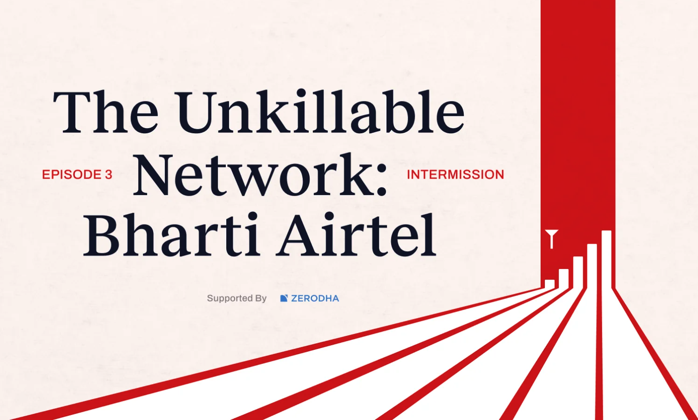
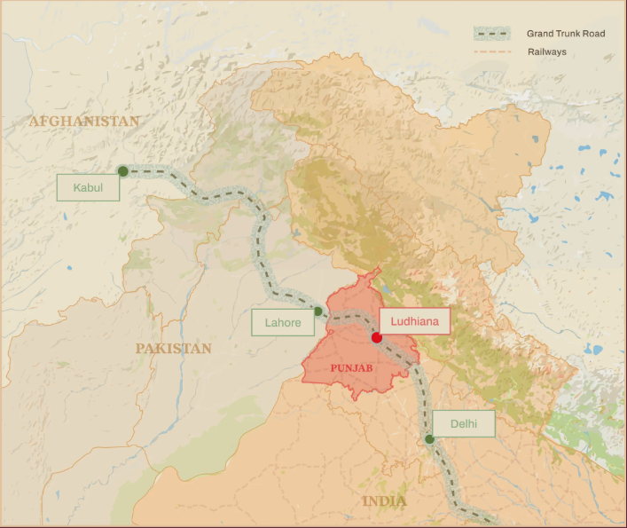
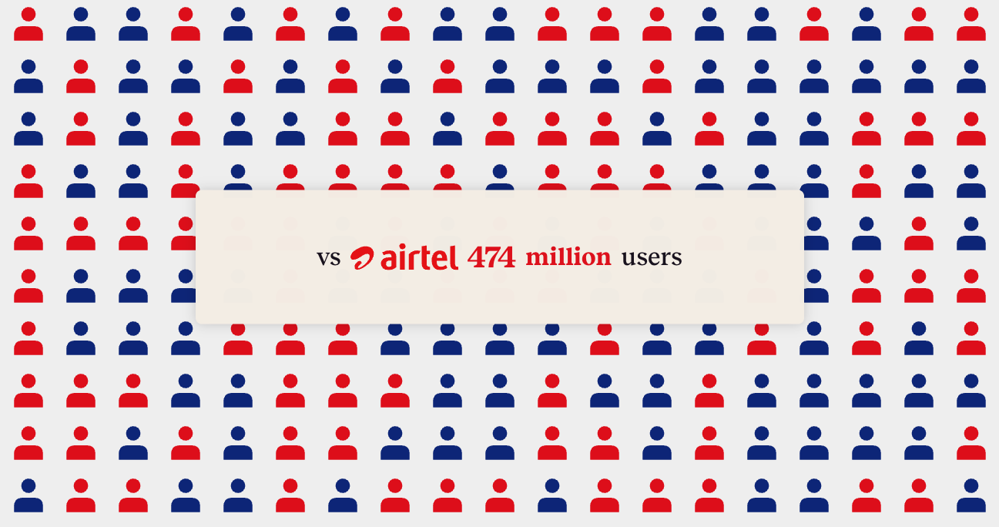
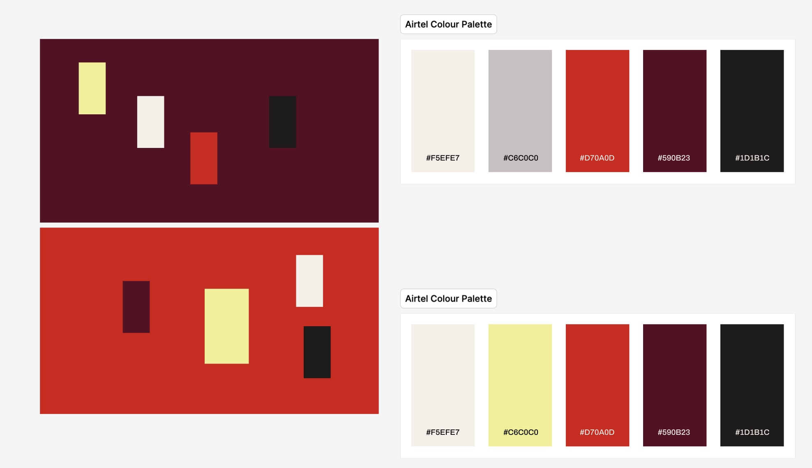
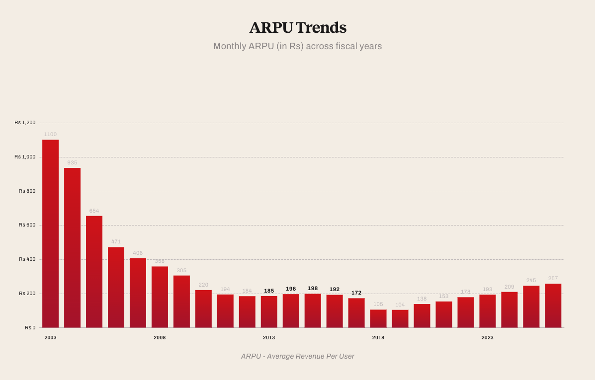
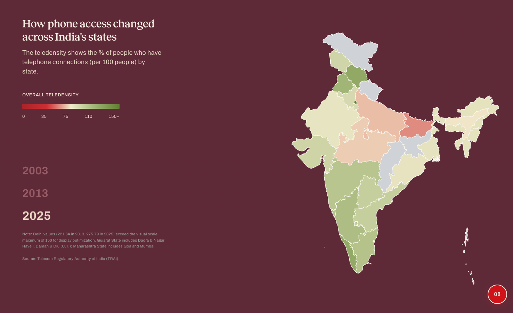
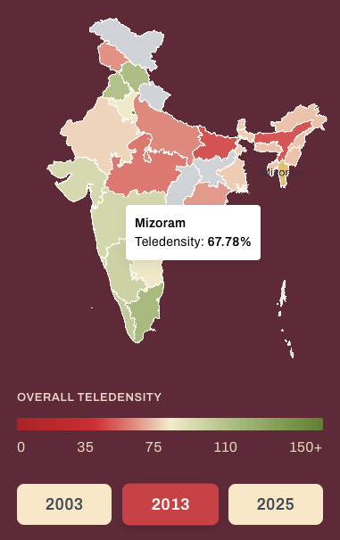
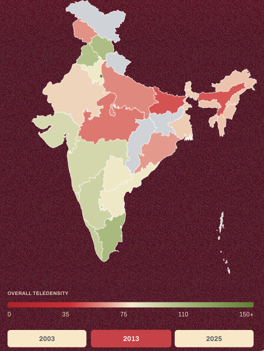
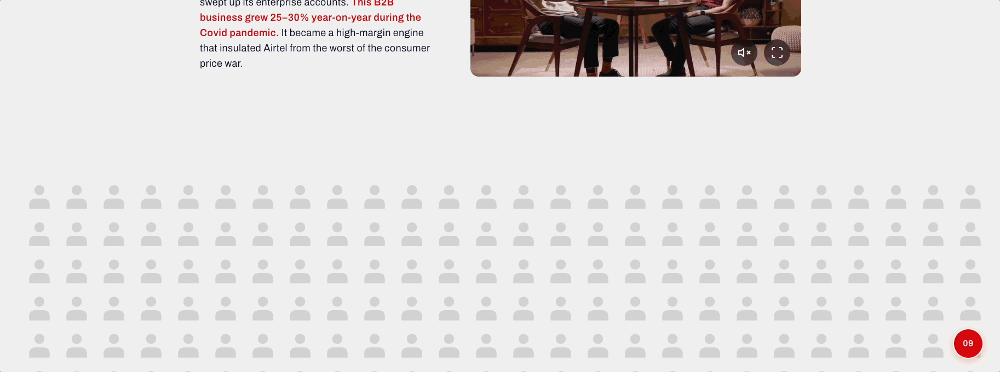

Intermission is a podcast series with dedicated companion websites, each episode tracing the history and legacy of a well-known Indian brand.
Episode 2 covers Airtel, the Indian lending giant — the story of a family business split, and how one branch of it, built around Sanjiv Bajaj, grew into a financial-services behemoth with money flowing into nearly every sector of Indian consumer credit.
This was the most visualisation-heavy episode of the series to date, with datasets ranging from market capitalisation to stock price history. This document walks through my process for sourcing the data, conceiving the visuals, and shipping them to the companion site.

SCRIPT
The process started with the script but needed additional data.
Given the scale of data this episode demanded, I took on part of the research task myself — specifically, extracting data from platforms that didn't offer direct APIs or AI-accessible exports.
For this, I built a web scraper using Playwright in JavaScript. One example: pulling Airtel's historical stock prices from Yahoo Finance. The historical price table on Yahoo Finance shared a common label — in this case, ep2-47h7 — that tagged every value in the chart. I used that label as a hook to pull the full dataset programmatically.
From there, the data needed shaping: formatting it down to the closing price for January of each year, and rebasing both Airtel's stock price and the Nifty 50 index so the two could be plotted and compared on the same scale.
The partition of India in 1947 changed everything. Hindu and Sikh refugees from West Punjab poured into Ludhiana. They turned residential alleyways into makeshift factories. The entrepreneurial spirit buzzed with life in the city. It became known as the Manchester of India by the 1960s.
V2.3 — Map — Map of Punjab showing Ludhiana's location relative to Delhi and Lahore, Grand Trunk Road, railways

Reference Image
EXPLORATIONS
We were targeting people interested in the company and its story like business enthusiasts, entrepreneurs, historians, and finance academics.
As with previous episodes, I explored a range of visualisation concepts using Google Gemini and the eCharts library. This time, I also pushed into less conventional formats — including a family tree, a structure that's often treated as a cliché in this kind of storytelling but felt essential given how central the Bajaj family split is to the episode's narrative.
The core challenge throughout was making dense, repetitive data at scale approachable for readers who aren't used to navigating interactive charts. The family tree was one answer to that; a couple of other unconventional formats followed the same logic.

Family Tree

Stocks Chart
The family tree let readers trace the Bajaj lineage and the 2015 split at a glance, without wading through paragraphs of succession history, while the stocks chart set that same story against the market's read on it — plotting how each listed entity performed once it stood on its own.
DESIGN SYSTEM
The site's visual language is owned by our visual team.
The team consists of a product designer and an art director, who maintain a consistent five-colour palette and a full design system covering typography, sizing, and spacing.

Claude Code helps encapsulate all the single HTMLs created by Google Gemini into a single file with all the interactive artefacts.
Once a design was finalised — after several rounds of discussion with the editor and researcher — I moved into adding detail and interaction: visual cues like shape changes and animated borders that made the static concepts feel alive.
A key part of this stage was building a "plug and play" system for the developer building the site. Since the visualisations I built were meant to double as the code package itself, they needed an architecture that would drop cleanly into the main site. That meant breaking each single HTML file into three parts: style.css, script.js, and a <section> block for the main index.html.
This let the developer integrate each visualisation natively — no iframes — simply by placing the <section>...</section> inside the main file and referencing the other two files. It gave us a clean, parallel workflow: we could both work on the site at the same time without stepping on each other's code.



Q&A
We used a Vercel server to push visualisations in real time, which let the wider team — across other functions — view and review the work as it evolved. We also used Ruttle to collect and track feedback.
QA is largely an iterative process grounded in the live context of the site.
Responsiveness was another crucial piece of QA on a project like this. We tested across screen sizes, but focused mainly on two — iPhone and iPad. Portrait phone layouts consistently need a different design approach from desktop, so that testing happens earlier, at the single-HTML prototype stage.
iPad is less predictable. Depending on the visualisation, either the web or mobile version can end up working better — there's no fixed rule. The biggest challenge on iPad is usually font sizing and alignment; when maximum heights are set correctly, the web version tends to hold up better, though that's not a hard-and-fast rule.

iPhone 12

iPad Mini
INTEGRATION

We used GitHub for version control, which kept our work transparent and kept us both accountable.
A solid communication and integration channel between designer and developer is essential to a project like this.
To keep the project modular and let us work in parallel without conflicts, we namespaced all my code under QW4K2- and worked on a separate branch. This let us avoid code collisions while still giving us the flexibility to draw on functionality the other had already built.
The completed data visualisations went live on The Ken's website on 17th August. You can explore the full episode here: Intermission/Airtel


PROTOTYPES
The visualisations as they actually shipped, live and interactive below.